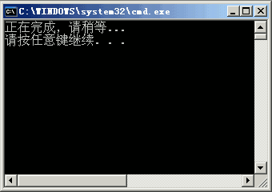
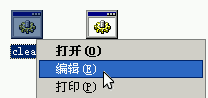
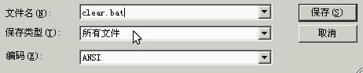

电脑操作基础
作者：TeliuTe 来源：基础教程网
三十六、批处理文件 返回目录 下一课批处理文件是一种简单的可执行文件，常常用来执行清理或简单的安装命令，下面我们来看一个练习；
1、批处理文件
1）批处理文件的图标是一个齿轮窗口图标，双击运行后会出来一个黑色命令行窗口；
2）在批处理文件图标上点右键，里面有一个“编辑”命令，可以查看文件的内容；

2、批处理命令
1）echo 是显示命令，它后面的文字会原样显示在命令行窗口里，前面加上“@”则会隐藏，
比如： echo 正在完成，请稍等...
2）del 是删除命令，可以删除指定的文件，星号“*”代表所有文件，
比如： echo del *.tmp
3）rd 是删除文件夹命令，可以删除指定文件夹；
4）pause 暂停命令，这时候按按一下回车键或空格键就可以继续；
5）可以用记事本来创建批处理文件，每行输入一句命令，保存的时候以.bat为文件名，类型选所有文件；
；
本课有一个XP系统下，清理系统垃圾文件的批处理文件，可以学习参考一下；
本节学习了批处理文件的基本操作，如果你成功地完成了练习，请继续学习下一课内容；本教程由86团学校TeliuTe制作|著作权所有，商业用途请与作者联系
基础教程网：http://teliute.org/
美丽的校园……
转载和引用本站内容，请保留版权信息和本站链接。